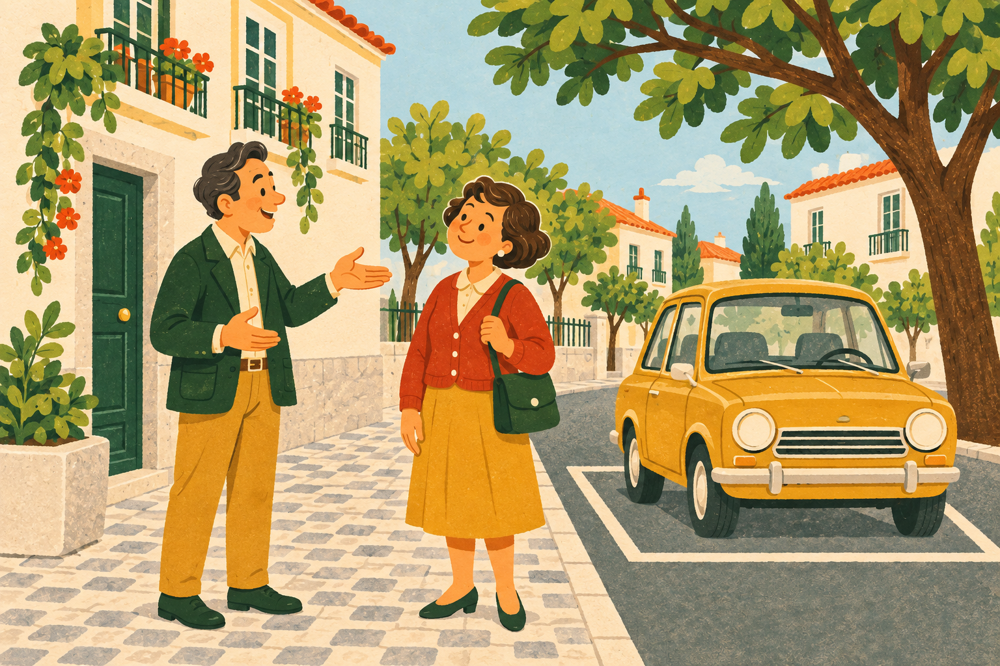

Na Estrada
Eu estava à espera desse lugar…
Esperas por um lugar de estacionamento. Outro condutor chega pelo lado contrário e ocupa-o. Não sabes se reparou em ti.
Como procuras esclarecer a situação?
Resultado
Errado neste caso.
A agressividade pode transformar um mal-entendido numa discussão.
Certo.
Explicas o problema e deixas espaço para a outra pessoa responder.
Errado neste caso.
Criar outro obstáculo agrava o conflito e pode afetar outras pessoas.
A solução comum às três escolhas
Explica o que aconteceu com respeito, sem presumir má intenção. O outro condutor pode não ter visto que estavas à espera.

Um pequeno gesto para experimentar
Antes de acusar, explica o problema com calma.